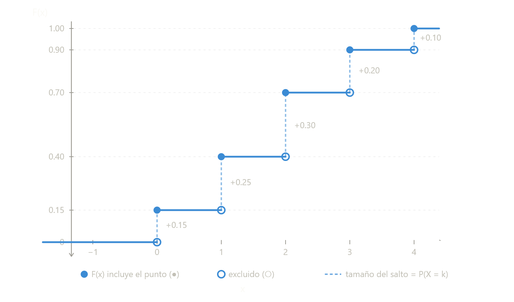

Capitulo 5 Función Acumulada (FAP)
5.1 Definición General
La Función Acumulada de Probabilidad (o Función de Distribución Acumulada - FDA) asocia a cada valor real \(x\) la probabilidad de que una variable aleatoria \(X\) tome un valor menor o igual que \(x\). Se denota comúnmente como \(F(x)\).
\[F(x) = P(X \le x)\]
Esta función es fundamental porque resume de manera completa la distribución de probabilidad de una variable aleatoria, ya sea discreta o continua.
5.2 1. Variable Aleatoria Discreta
5.2.1 Definición
Para una variable aleatoria discreta \(X\) con función de masa de probabilidad \(p(x_i) = P(X = x_i)\), la función acumulada se calcula sumando las probabilidades de todos los valores menores o iguales a \(x\):
\[F(x) = \sum_{x_i \le x} p(x_i)\]
5.2.2 Ejemplo: Lanzamiento de un dado justo
- \(X = \{1,2,3,4,5,6\}\), con \(p(x_i) = \frac{1}{6}\)
- \(F(2) = P(X \le 2) = p(1)+p(2) = \frac{1}{6}+\frac{1}{6} = \frac{2}{6} = \frac{1}{3}\)
5.2.3 Gráfica (Función escalonada)
La gráfica es una función escalonada que: - Permanece constante en los intervalos entre valores posibles. - Da un “salto” de magnitud \(p(x_i)\) en cada valor \(x_i\).

Nota: El círculo relleno ● indica que el valor en el punto está incluido (por la definición \(P(X \le x)\)), y el círculo abierto ○ indica que no está incluido en el escalón siguiente.
5.3 2. Variable Aleatoria Continua
5.3.1 Definición
Para una variable aleatoria continua \(X\) con función de densidad de probabilidad \(f(x)\), la función acumulada se define mediante la integral:
\[F(x) = \int_{-\infty}^{x} f(t) \, dt\]
5.4 Propiedades de la Función Acumulada
| Propiedad | Descripción | Implicación |
|---|---|---|
| 1. Acotación | \(0 \le F(x) \le 1\) para todo \(x \in \mathbb{R}\) | Es una probabilidad acumulada. |
| 2. Monotonía | Si \(a < b\), entonces \(F(a) \le F(b)\) | No puede decrecer; refleja acumulación. |
| 3. Límites |
\(\lim_{x \to -\infty} F(x) = 0\) \(\lim_{x \to +\infty} F(x) = 1\) |
A la izquierda del todo es 0; a la derecha del todo es 1. |
| 4. Continuidad por la derecha | \(F(x) = \lim_{t \to x^+} F(t)\) para todo \(x\) | En variables continuas es continua; en discretas tiene saltos pero siempre continua por derecha. |
| 5. Probabilidad en intervalo | \(P(a < X \le b) = F(b) - F(a)\) | Base para calcular probabilidades de intervalos. |
| 6. Relación con densidad | Si existe \(f(x)\), entonces \(f(x) = \frac{d}{dx}F(x)\) casi en todas partes. | Permite pasar de acumulada a densidad. |
5.5 Comparación visual entre discreta y continua
| Característica | Variable Discreta | Variable Continua |
|---|---|---|
| Forma de la gráfica | Escalonada (saltos) | Curva suave y continua |
| Puntos de salto | En cada valor posible \(x_i\) | No hay saltos |
| Altura del salto = \(p(x_i)\) | No aplica | |
| Derivabilidad | No derivable en los saltos | Derivable (casi siempre) |
| Interpretación de \(F(x)\) | Suma de probabilidades | Área bajo la curva de densidad hasta \(x\) |
5.6 Sintesis
La función acumulada de probabilidad es una herramienta unificadora: trabaja de manera análoga para variables discretas y continuas. Permite:
- Calcular probabilidades de intervalos de forma sencilla.
- Obtener percentiles (la inversa de la función acumulada).
- Comparar distribuciones independientemente de su tipo.
Recuerde: En el caso discreto la acumulación se hace por sumas (saltos), y en el continuo por integrales (áreas bajo la curva).
\[F(x) = P(X \le x) = \begin{cases} \sum_{x_i \le x} p(x_i) & \text{si } X \text{ es discreta} \\ \int_{-\infty}^{x} f(t)\, dt & \text{si } X \text{ es continua} \end{cases}\]